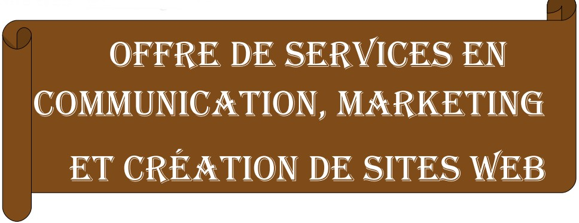

MAGHEN NEGOU Rostant
COMMUNICATEUR • INFORMATICIEN
BP : 11815 Akwa, Douala, Cameroun
Tél : (+237) 77 92 06 85 / 94 27 12 80
33 06 61 02 / 77 55 57 43 / 96 71 64 72
Email : maghen2@gmail.com
Site Web : www.maghen.org 
OFFRE DE SERVICES EN COMMUNICATION, MARKETING
ET CRÉATION DE SITES WEB
Table des matières
I.2 STRATÉGIE ET PLAN MARKETING................................................................... 3
II.OFFRE DE SERVICES DE COMMUNICATION......................................................... 4
III.OFFRE DE SERVICES DE WEBMASTERING.......................................................... 6
III.2 VOTRE SITE WEB EN CINQ (05) ETAPES....................................................... 6
J'offre un service complet qui couvre les domaines du Marketing, de la Communicationet de la Programmation Informatique.
10 années d’expérience professionnelle dans ces domaines m'ont permis une excellente maîtrise des outils d'élaboration et d’implémentation de solutions efficaces. Ainsi ma formation pluridisciplinaire répond aux exigences des différents postes que j'ai eu à occuper dans divers entreprises. Ce ci m'a amené à me spécialisé en Communication Marketing Intégrée (CMI).
Ma mission est de collaborer avec une variété de clients et une équipe d'employés motivés et responsables, afin d'offrir des solutions innovatrices, en ayant toujours en tête l'obligation de résultats. En effet, Au cours de ma carrière, j'ai tout particulièrement mis l'accent sur l'amélioration des procédés internes et l'augmentation du chiffre d'affaires.
Comme vous pourrez le constater à la lecture de mon CV, je suis un habitué des univers dynamiques et exigeants. Je recherche aujourd’hui de nouveaux défis à relever dans lesquelles je pourrais mettre à profit aussi bien mon expérience que mes qualités relationnelles. Je me tiens à votre disposition pour toute information complémentaire.
Dans la quête d’une meilleure compétitivité, les entreprises ont tendance à tort, de négliger le diagnostic stratégique du marché. Je combine différentes sources d’informations afin d’établir un audit de marché. Le diagnostic stratégique de marché n’est pas une simple analyse du marché mais permet d’identifier vos facteurs clefs de succès, les opportunités de gain de compétitivité. Il permettra de dégager :
• Le périmètre et les évolutions de votre compétition
• Les points d’attractivité ou de supériorité concurrence
• Les attentes satisfaites ou non satisfaites du marché
• Les facteurs de risques et vos opportunités
Investir un marché suppose de connaître et de saisir ses leviers. Je vous apporte le savoir-faire nécessaire pour décrypter les clefs de succès, et par ailleurs formaliser votre stratégie marketing. J'interviens également pour animer vos équipes dans la construction des axes stratégiques annuels, définition d’objectifs SMART et plan marketing via des méthodes spécifiques. Il s'agira de vous aider à :
• Mieux comprendre votre clientèle
• Décrypter le mix et le positionnement de la concurrence
• Identifier les leviers de votre marché
• Définir les axes de développement et les actions à prioriser
• Mieux prendre en compte la concurrence
• Enrichir les plans marketing par un travail projectif
• Générer de l’anticipation et de la vision
• Définir les initiatives stratégiques
Ma démarche vise à capitaliser vos atouts pour co-construire avec vous une stratégie d’action cohérente. Nous partons d’un bilan commun de vos actions antérieures pour définir les actions à mettre en place tout au long du tunnel d’acquisition de prospects et clients. L’élaboration d’un plan d’action pourra être au service de différents objectifs :
• Recrutement de nouveaux clients
• Plan de fidélisation clients
• Création de trafic
• Animation de réseau
• Animation point de vente
• Déploiement de stratégie évènementielle
Il ne suffit pas d’avoir une présence sur le web pour connaître du succès, encore faut-il acquérir, convertir et fidéliser vos clients. Votre entreprise est unique et vos stratégies de marketing internet doivent l’être aussi. Voilà pourquoi dès le départ je prends le temps de bien connaître votre entreprise, vos produits et services ainsi que vos concurrents afin de vous fournir des recommandations sur les meilleures façons d’accroître vos revenus et d’améliorer les retombées de vos diverses campagnes via le marketing internet. Voici quelques-unes des techniques avec lesquelles je peux contribuer à votre succès :
• Audits marketing
• Séances de planification stratégique
• Plans marketing annuels et triennaux
• Techniques marketing à court terme
• Briefing de campagnes
• Planification de publication
• Projections ROI & analyse de retombées
Plus qu'un simple conseiller, je m'investis avec vous dans la réalisation de vos objectifs. Je serais un solide partenaire de vos communications, de votre développement d’affaires, de vos recherches d’opportunités et de renseignements d’affaires. Beaucoup plus qu’un simple prestataire de services, mon réseau serra à votre service et travaillera pour vous, car seul les résultats motivent mes interventions.
De plus, mes interventions sont souvent un appui aux démarches déjà existantes dans l'entreprise. Mon action s’insérera donc dans vos plans.
• Communiquer, influencer et convaincre;
• Développer stratégiquement vos affaires;
• Trouver la bonne information, le bon renseignement;
• Élaborer le bon argumentaire;
• Organiser et réaliser un projet commercial;
• Rechercher les opportunités;
• Trouver la bonne ressource;
• Soutenir l’acceptation sociale d’un projet;
• Gérer et défendre vos enjeux;
• Surveiller votre environnement concurrentiel;
• Gérer l’urgence, les risques et la crise;
• Anticiper les enjeux, les menaces, les opportunités;
• Analyser le risque informationnel;
• Développer vos affaires électroniques;
• Rationaliser votre démarche d'innovation et de différenciation ;
• Élaborer votre plan de communication ;
• Élaborer vos plans d'introduction de nouveaux produits et services ;
• Gérer vos relations presse et vos relations public
La conception, réalisation et maintenance de sites web (webmastering) constituent une offre de services essentiels. A l’ère de la mondialisation, votre site web est un outil indispensable au développement, à l’expansion et à la pérennisation de votre entreprise.
Dans une entreprise, la mise en place d'un site web est généralement motivée par plusieurs raisons dont:
• Le besoin de visibilité : un site web, dans la mesure où il fait l'objet d'une bonne campagne de promotion, peut être un moyen pour une enseigne ou une organisation d'augmenter sa visibilité ;
• L'amélioration de la notoriété : grâce à un site web institutionnel ou un mini site web événementiel, une enseigne peut développer sa popularité auprès du public ;
• La collecte de données : internet représente pour les entreprises une formidable opportunité de recueillir des données sur leurs clients ou bien de démarcher de nouveaux prospects ;
• L'accroissement des ventes : frileux aux débuts d'internet, les internautes ont vite compris l'intérêt d'internet pour l'achat de certains produits de consommation. Un site internet peut représenter pour certaines entreprises une formidable opportunité en terme de commercialisation ;
• La mise en place d'un support aux utilisateurs : de plus en plus de sociétés utilisent internet comme support privilégié pour le service avant-vente ou après-vente. En effet, avec un site web, il est possible de mettre à disposition des internautes un maximum d'informations commerciales ou techniques, à moindre coût.
Conformément au rôle du webmaster , je vous accompagne à chacune des étapes de la réalisation de votre site web , depuis sa conception jusqu'à sa gestion quotidienne en passant par la rédaction du cahier de charge et de la charte graphique, la réalisation proprement dite, le choix de votre nom de domaine, l'hébergement de votre site web, son référencement, sa promotion et son audimat.
La conception de votre site web sera une démarche participative, orientée utilisateurs finaux ; c'est-à-dire que l'ensemble de la conception de votre site web sera principalement centrée sur vos utilisateurs (vos clients, vos partenaires, votre personnel, etc.) et réalisée en étroite concertation avec vous. Il s'agira à cette étape d'analyser l'ensemble de vos besoins, puis d'imaginer des contextes d'utilisation pour en déduire les solutions adaptées. Les différentes solutions retenues seront formalisées dans le cahier des charges ; s'ensuivra la rédaction du planning détaillé.
Je vous propose de réaliser votre site web dans le strict respect des normes et standards du web, en m'appuyant sur les technologies les plus performantes du moment. XHTML, HTML5, CSS, AJAX, JavaScript, PHP et MySQL sont les principaux langages et technologies que j'utilise au quotidien pour réaliser les sites web de mes clients.
Afin de toujours répondre efficacement aux attentes de mes clients et leur fournir un confort d'utilisation optimal, je réalise les sites web en respectant 08 principes fondamentaux : Sobriété, Lisibilité, Utilisabilité, Rapidité, Interactivité, Adaptabilité, Accessibilité, Identité.
La valorisation de l'image de votre entreprise sera portée par un design professionnel capable de renforcer votre identité visuelle et de procurer un sentiment de confiance à vos visiteurs. Ainsi donc, la charte graphique et la maquette de votre site web s’inscriront dans votre stratégie de communication.
Pour l’hébergement de votre site web, que vous désirez un nom de domaine national ( www.votreentreprise .cm ) ou un nom de domaine générique (.com .net .org .pro .asso etc.), je vous propose un pack complet de services professionnels comprenant un ou plusieurs nom de domaine, domaine de courrier (e-mail professionnel), serveur web, base de données, comptes FTP, et études statistiques.
Par de nombreux moyens éprouvés, j’assure la promotion de votre site web pour le faire connaître, afin d'en améliorer le trafic. Ainsi vous gagnez en notoriété, vous obteniez de nouveaux prospects et vous développeriez le nombre de vos ventes.
La maintenance, la mise à jour, la veille concurrentielle et la veille technologique de votre site web sont assurées en continue afin que vous tiriez le meilleur de votre investissement.
Je suis un praticien qui opère sur mesure, et toujours avec écoute, agilitéet pragmatisme. Je travaillerais en étroite collaboration avec vous pour une co-construction des solutions, afin qu'à tout moment vous gardiez un total contrôle sur votre entreprise. Je suis aussi là pour faciliter l’adhésion de vos acteurs au changement. Mon empreinte personnelle est la connectivité aux clients. Mon accompagnement a une préoccupation centrale: apporter des solutions toujours pensées à partir des clients.
En bref :
Principes actifs: pragmatisme et sur-mesure
Philosophie d’action: la co-construction
Empreinte : des solutions recentrées clients
Moteur d’action: les résultats
Les clauses de confidentialité m’empêchent de vous communiquer la liste de tous mes clients. Toute fois vous pourrez trouver sur mon site web une liste de clients qui m'ont expressément autorisé à les citer dans mes références. Je profite de l'occasion pour les témoigner toute ma gratitude. www.maghen.org/portfolio.php